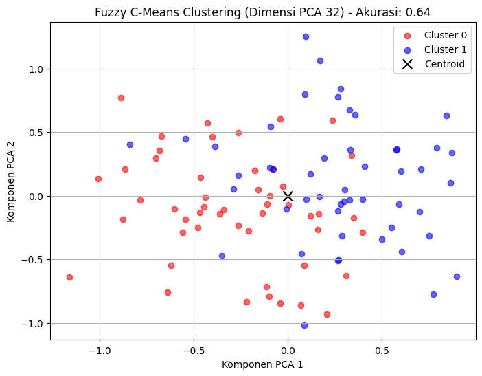
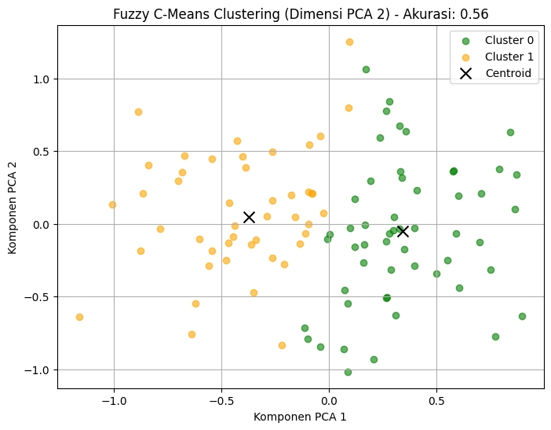
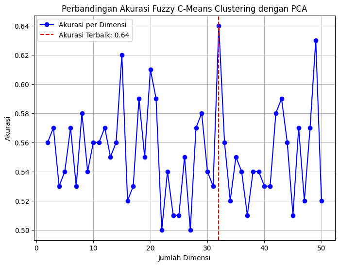

Implementasi Reduksi Dimensi PCA dan Fuzzy C-Means untuk Clustering Data#
!pip install scikit-fuzzy
Collecting scikit-fuzzy
Downloading scikit_fuzzy-0.5.0-py2.py3-none-any.whl.metadata (2.6 kB)
Downloading scikit_fuzzy-0.5.0-py2.py3-none-any.whl (920 kB)
?25l ━━━━━━━━━━━━━━━━━━━━━━━━━━━━━━━━━━━━━━━━ 0.0/920.8 kB ? eta -:--:--
━━━╸━━━━━━━━━━━━━━━━━━━━━━━━━━━━━━━━━━━━ 81.9/920.8 kB 3.0 MB/s eta 0:00:01
━━━━━━━━━━━━━━━━━━━━━━━━━━━╸━━━━━━━━━━━━ 634.9/920.8 kB 9.4 MB/s eta 0:00:01
━━━━━━━━━━━━━━━━━━━━━━━━━━━━━━━━━━━━━━━━ 920.8/920.8 kB 9.6 MB/s eta 0:00:00
?25h
Installing collected packages: scikit-fuzzy
Successfully installed scikit-fuzzy-0.5.0
import numpy as np
import pandas as pd
from sklearn.decomposition import PCA
from skfuzzy.cluster import cmeans
from sklearn.preprocessing import LabelEncoder
from sklearn.metrics import accuracy_score
import matplotlib.pyplot as plt
!pip install scikit-fuzzy
Requirement already satisfied: scikit-fuzzy in /usr/local/lib/python3.10/dist-packages (0.5.0)
import numpy as np
import pandas as pd
from sklearn.decomposition import PCA
from skfuzzy.cluster import cmeans
from sklearn.preprocessing import LabelEncoder
from sklearn.metrics import accuracy_score
import matplotlib.pyplot as plt
file_path = "hasil_crowling.csv"
data = pd.read_csv(file_path)
data
| Judul | Tanggal | Ringkasan | Kategori | |
|---|---|---|---|---|
| 0 | Ketum MUI: Dampak Judol dan Pinjol Sebabkan Ke... | 19 Des 2024 12:30 | Ketua Umum Majelis Ulama Indonesia (MUI), KH A... | Peristiwa |
| 1 | Emak-Emak Jadi Korban Hipnotis di Pasar Depok,... | 19 Des 2024 11:27 | Seorang perempuan berinisial FNL (56) menjadi ... | Peristiwa |
| 2 | Pj Gubernur Jakarta Minta Inspektorat Investig... | 19 Des 2024 11:13 | Hasil sementara Inspektorat memang ditemukan a... | Peristiwa |
| 3 | Bertemu PM Pakistan, Prabowo Bahas Kerja Sama ... | 19 Des 2024 11:00 | Prabowo menyampaikan sejumlah upaya yang dilak... | Peristiwa |
| 4 | Jaga Kondusifitas, Kapolda Metro Imbau Malam T... | 19 Des 2024 10:42 | Kapolda Metro Jaya, Irjen Pol Karyoto mengimba... | Peristiwa |
| 5 | KAI Pastikan Kelayakan Armada Beroperasi pada ... | 19 Des 2024 10:34 | Mursid menegaskan komitmen Balai Yasa untuk me... | Peristiwa |
| 6 | Pemerintah Berikan Diskon Listrik 50%, Ekonom:... | 19 Des 2024 10:05 | Kepala Center of Food, Energy & Sustainable De... | Peristiwa |
| 7 | Infografis Pemulangan Mary Jane dan 5 Terpidan... | 19 Des 2024 10:04 | Mary Jane, terpidana mati kasus narkotika asal... | Infografis |
| 8 | Apa Saja Sektor Penting Bebas PPN 12 Persen ? | 19 Des 2024 09:55 | Kenaikan tarif PPN 12 persen ini tidak berlaku... | Politik |
| 9 | Cuaca Besok Jumat 20 Desember 2024: Hujan Dipr... | 19 Des 2024 08:15 | Cuaca pagi Jakarta besok, Jumat, 20 Desember 2... | Peristiwa |
| 10 | Raih Penghargaan KIP, Nasaruddin Umar Janji Ke... | 19 Des 2024 08:01 | Komisi Informasi Pusat (KIP) menganugerahkan p... | Peristiwa |
| 11 | Prabowo Temui Grand Syekh Al-Azhar di Mesir, P... | 19 Des 2024 07:45 | Presiden Prabowo Subianto menemui Grand Syekh ... | Peristiwa |
| 12 | Cuaca Indonesia Hari Ini Kamis 19 Desember 202... | 19 Des 2024 07:30 | Langit sebagian besar wilayah Indonesia pada K... | Peristiwa |
| 13 | Hadapi Cuaca Ekstrem, Kepala BMKG Cek Kesiapan... | 19 Des 2024 07:15 | Kepala Badan Meteorologi, Klimatologi, dan Geo... | Peristiwa |
| 14 | Berlaku Hari Ini! Cek 26 Titik Ganjil Genap Ja... | 19 Des 2024 07:00 | Pada Kamis (19/12/2024) aturan ganjil genap Ja... | Peristiwa |
| 15 | Cuaca Hari Ini Kamis 19 Desember 2024: Jabodet... | 19 Des 2024 06:20 | Cuaca pagi di Jakarta pada hari ini, Kamis (19... | Peristiwa |
| 16 | Pramono Anung Ungkap Alasan Akan Terbuka denga... | 19 Des 2024 06:06 | Calon Gubernur Jakarta Pramono Anung mengaku s... | Peristiwa |
| 17 | Gandeng JAM Intel Kejagung, Mendes Yandri Hara... | 19 Des 2024 06:06 | Kemendes PDTT saat ini tengah menggodok peratu... | Peristiwa |
| 18 | BPIP Raih Penghargaan Kualifikasi Informatif d... | 19 Des 2024 05:58 | Tahun ini BPIP meraih predikat kualifikasi Inf... | Peristiwa |
| 19 | Bacakan Pleidoi, Terdakwa Reza Jelaskan Awal J... | 19 Des 2024 04:46 | Terdakwa kasus korupsi timah, Rezma Andriansya... | Peristiwa |
| 20 | 5 Siswa SMA 70 Jaksel yang Terlibat Pengeroyok... | 19 Des 2024 04:10 | Pihak Sekolah Menengah Atas (SMA) 70 Jakarta p... | Peristiwa |
| 21 | Dishub Jakarta Bahas Wacana Kenaikan Tarif Tra... | 19 Des 2024 03:46 | Dinas Perhubungan (Dishub) Jakarta tengah memb... | Peristiwa |
| 22 | Mary Jane dan 5 Terpidana Mati Bali Nine Dipul... | 19 Des 2024 00:01 | Hingga saat ini baik Filipina dan Australia be... | Rajut |
| 23 | Kemenag Raih Predikat 'Sangat Baik' dalam IPPN... | 18 Des 2024 23:33 | Penilaian IPPN merupakan bagian dari reformasi... | Peristiwa |
| 24 | Prabowo-Presiden Mesir Bahas Penguatan Kerja S... | 18 Des 2024 23:10 | Presiden Prabowo Subianto melakukan pertemuan ... | Peristiwa |
| 25 | Terdakwa Kasus Korupsi Timah Suparta: Niat Ban... | 18 Des 2024 22:40 | Terdakwa kasus korupsi timah, Suparta, menyamp... | Peristiwa |
| 26 | PLTP Ulumbu 5-6 Ditargetkan Beroperasi 2026, B... | 18 Des 2024 21:46 | Dengan laju pertumbuhan penduduk yang terus me... | Peristiwa |
| 27 | Antisipasi Bencana, Kantor SAR Jakarta Gelar L... | 18 Des 2024 21:30 | 120 personel gabungan mengikuti Latihan Gabung... | Peristiwa |
| 28 | Kejati Jakarta Geledah Kantor Dinas Kebudayaan... | 18 Des 2024 21:25 | Kejaksaan Tinggi Jakarta menggeledah sejumlah ... | Peristiwa |
| 29 | Pulang Main Bilyard, Pria di Tangerang Kota Di... | 18 Des 2024 21:00 | Seorang pria dikeroyok usai bermain bilyard di... | Peristiwa |
| 30 | Kejati Jakarta Geledah Kantor Dinas Kebudayaan... | 18 Des 2024 20:41 | Syahron mengatakan, Kejati DK Jakarta mulai me... | Peristiwa |
| 31 | Bentrok Warga dengan Pekerja di Tanah Abang Ja... | 18 Des 2024 20:35 | Satu orang tewas diduga akibat bentrokan yang ... | Peristiwa |
| 32 | Pemkab Tangerang Gelar Seleksi Definitif Sekre... | 18 Des 2024 20:21 | Kepala BKPSDM Kabupaten Tangerang, Hendar Hera... | Megapolitan |
| 33 | Polisi Berjaga di Lokasi Keributan di Jakpus, ... | 18 Des 2024 20:16 | Satu orang meninggal dunia akibat bentrokan an... | Peristiwa |
| 34 | Viral! Aksi Heroik Wanita di Jakut, Terseret S... | 18 Des 2024 20:07 | Kapolsek Cilincing, Kompol Fernando Saharta Sa... | Peristiwa |
| 35 | Gegara Tanya Utang Piutang, Berujung Penganiay... | 18 Des 2024 20:00 | Keributan terjadi di Pasar Tebet Barat, Jakart... | Peristiwa |
| 36 | Amankan Natal dan Tahun Baru, 141.605 Personel... | 18 Des 2024 19:54 | Operasi Lilin 2024 tidak hanya berfokus pada k... | Peristiwa |
| 37 | OJK Pertahankan Predikat Badan Publik Informat... | 18 Des 2024 19:45 | Otoritas Jasa Keuangan (OJK) meraih predikat b... | Peristiwa |
| 38 | Wakil Ketua Komisi X: Fasilitas dan Minim Guru... | 18 Des 2024 19:38 | Politikus PKB itu menekankan pentingnya integr... | Peristiwa |
| 39 | Bacakan Pleidoi, Pesan Harvey Moeis ke Anaknya... | 18 Des 2024 19:27 | Dalam pleidoinya, Harvey Moeis juga meminta ma... | Peristiwa |
| 40 | PKB Ingatkan Pemerintah Jamin Kelancaran dan I... | 18 Des 2024 19:18 | Menurut dia, fokus utama pemerintah dalam peri... | Politik |
| 41 | Temui Presiden Mesir, Prabowo Disambut Upacara... | 18 Des 2024 19:00 | Kedua pimpinan negara bersalaman dan kemudian ... | Peristiwa |
| 42 | Diperiksa KPK Selama 7 Jam, Yasonna Laoly Dice... | 18 Des 2024 18:49 | Yasonna Laoly diperiksa KPK dalam kapasitasnya... | Peristiwa |
| 43 | Kasus Harun Masiku, Yasonna: Saya Diperiksa Se... | 18 Des 2024 18:38 | Yasonna Laoly menjelaskan, dalam pada saat Pem... | Peristiwa |
| 44 | Pembangunan Tanggul Pantai di Jakarta Molor, T... | 18 Des 2024 18:36 | Pelaksana tugas (Plt) Kepala Dinas Sumber Daya... | Megapolitan |
| 45 | Tatap 2025, Program Tekad Dukung BUMDes Perku... | 18 Des 2024 18:28 | Fokus utama Program TEKAD adalah melatih BUMDe... | Peristiwa |
| 46 | NasDem: Kajian Pilkada Dikembalikan ke DPRD Ha... | 18 Des 2024 18:22 | Selain kajian mendalam, NasDem juga mendorong ... | Politik |
| 47 | Komnas HAM Ungkap Potret Situasi Papua Sepanja... | 18 Des 2024 18:03 | Dampak dari konflik bersenjata dan kekerasan m... | Peristiwa |
| 48 | Pengakuan Harvey Moeis, Tidak Pernah Punya dan... | 18 Des 2024 18:00 | Terdakwa Harvey Moeis mengaku dirinya, keluarg... | Peristiwa |
| 49 | Pemulangan ke Filipina Diapresiasi, Komnas HAM... | 18 Des 2024 17:44 | Anis menyayangkqn, kasus TPPO terhadap Mary Ja... | Peristiwa |
| 50 | Pakai Samurai, Kawanan Begal Beraksi di Cengka... | 18 Des 2024 17:35 | Insiden itu dialami seorang laki-laki berinisi... | Peristiwa |
| 51 | Raih Penghargaan KIP, Gerindra Komitmen Berant... | 18 Des 2024 17:29 | Penghargaan ini dapat menjadi bukti bahwa komi... | Peristiwa |
| 52 | 5 Pernyataan Terpidana Mati Kasus Narkoba Mary... | 18 Des 2024 17:15 | Terpidana mati kasus penyelundupan narkoba Mar... | Peristiwa |
| 53 | Harvey Moeis Baca Pleidoi, Sebut Sang Istri Sa... | 18 Des 2024 17:07 | Harvey Moeis mengatakan, Sandra Dewi telah dif... | Peristiwa |
| 54 | BPBD Jakarta Siapkan Skema Evakuasi Antisipasi... | 18 Des 2024 17:00 | Badan Penanggulangan Bencana Daerah (BPDB) Jak... | Peristiwa |
| 55 | Komnas HAM: PSN Pangan Presiden Prabowo di Mer... | 18 Des 2024 16:44 | Aduan itu dikarenakan proses perencanaan pemba... | Peristiwa |
| 56 | Pramono Anung Sedang Bentuk Tim Transisi Pemer... | 18 Des 2024 16:25 | Gubernur terpilih Jakarta Periode 2024-2029 Pr... | Politik |
| 57 | Komitmen Transparansi, Kemendagri Raih Penghar... | 18 Des 2024 16:18 | Berdasarkan hasil monitoring dan evaluasi (mon... | News |
| 58 | Projo Tunggu Perintah Jokowi, Siap Berubah Jad... | 18 Des 2024 16:16 | Handoko mengatakan pintu Projo akan selalu ter... | Politik |
file_path = "hasil_crowling.csv"
data = pd.read_csv(file_path)
print(data.columns.tolist())
['Judul', 'Tanggal', 'Ringkasan', 'Kategori']
import pandas as pd
file_path = "hasil_crowling.csv"
data = pd.read_csv(file_path)
# Menampilkan nama kolom dalam baris terpisah setiap 20 kolom
column_names = data.columns.tolist()
for i in range(0, len(column_names), 20):
print(", ".join(column_names[i:i+20]))
Judul, Tanggal, Ringkasan, Kategori
labels = data['Kategori']
features = data.drop('Kategori', axis=1).values
from sklearn.preprocessing import LabelEncoder
label_encoder = LabelEncoder()
encoded_labels = label_encoder.fit_transform(labels)
!pip install scikit-fuzzy
Requirement already satisfied: scikit-fuzzy in /usr/local/lib/python3.10/dist-packages (0.5.0)
from sklearn.decomposition import PCA
from skfuzzy.cluster import cmeans
from sklearn.metrics import accuracy_score
import numpy as np
# Contoh data
features = np.random.rand(100, 50) # 100 sampel, 50 fitur
encoded_labels = np.random.randint(2, size=100) # 100 label biner
results = {}
# Fuzzy C-Means Clustering dan PCA untuk dimensi yang berbeda
max_dim = min(features.shape[1], 100)
for dim in range(max_dim, 1, -1):
# Kurangi dimensi data
pca = PCA(n_components=dim)
reduced_features = pca.fit_transform(features)
# Fuzzy C-Means Clustering
cntr, u, u0, d, jm, p, fpc = cmeans(
data=reduced_features.T,
c=2, # 2 clusters
m=2.0, # Tingkat fuzziness
error=0.005, # Toleransi error
maxiter=1000 # Iterasi maksimum
)
# Keanggotaan cluster
cluster_membership = np.argmax(u, axis=0)
# Hitung akurasi berdasarkan label asli
accuracy = max(
accuracy_score(encoded_labels, cluster_membership),
accuracy_score(encoded_labels, 1 - cluster_membership) # Cek inversi cluster
)
# Simpan hasil
results[dim] = {
'pca_features': reduced_features,
'centroids': cntr,
'membership': cluster_membership,
'accuracy': accuracy
}
best_dim = max(results, key=lambda dim: results[dim]['accuracy'])
best_accuracy = results[best_dim]['accuracy']
print(f"Akurasi terbaik: {best_accuracy:.2f} pada dimensi {best_dim}.")
Akurasi terbaik: 0.64 pada dimensi 32.
import matplotlib.pyplot as plt
# Scatter plot untuk dimensi terbaik (2 dimensi)
final_result = results[best_dim]
pca_features = final_result['pca_features']
centroids = final_result['centroids']
membership = final_result['membership']
accuracy = final_result['accuracy']
plt.figure(figsize=(8, 6))
colors = ['red', 'blue']
for i in range(2): # Untuk 2 cluster
cluster_points = pca_features[membership == i]
plt.scatter(cluster_points[:, 0], cluster_points[:, 1], c=colors[i], label=f'Cluster {i}', alpha=0.6)
# Tambahkan centroid
plt.scatter(centroids[:, 0], centroids[:, 1], c='black', marker='x', s=100, label='Centroid')
plt.title(f"Fuzzy C-Means Clustering (Dimensi PCA {best_dim}) - Akurasi: {accuracy:.2f}")
plt.xlabel("Komponen PCA 1")
plt.ylabel("Komponen PCA 2")
plt.legend()
plt.grid()
plt.show()

final_result_2d = results[2]
pca_features_2d = final_result_2d['pca_features']
centroids_2d = final_result_2d['centroids']
membership_2d = final_result_2d['membership']
accuracy_2d = final_result_2d['accuracy']
# Scatter Plot untuk Dimensi 2
plt.figure(figsize=(8, 6))
colors = ['green', 'orange']
for i in range(2): # Untuk 2 cluster
cluster_points = pca_features_2d[membership_2d == i]
plt.scatter(cluster_points[:, 0], cluster_points[:, 1], c=colors[i], label=f'Cluster {i}', alpha=0.6)
# Tambahkan centroid
plt.scatter(centroids_2d[:, 0], centroids_2d[:, 1], c='black', marker='x', s=100, label='Centroid')
plt.title(f"Fuzzy C-Means Clustering (Dimensi PCA 2) - Akurasi: {accuracy_2d:.2f}")
plt.xlabel("Komponen PCA 1")
plt.ylabel("Komponen PCA 2")
plt.legend()
plt.grid()
plt.show()

dim_list = list(results.keys())
accuracy_list = [result['accuracy'] for result in results.values()]
plt.figure(figsize=(8, 6))
plt.plot(dim_list, accuracy_list, marker='o', color='b', linestyle='-', label="Akurasi per Dimensi")
plt.xlabel("Jumlah Dimensi")
plt.ylabel("Akurasi")
plt.title(f"Perbandingan Akurasi Fuzzy C-Means Clustering dengan PCA")
plt.axvline(best_dim, color='r', linestyle='--', label=f"Akurasi Terbaik: {best_accuracy:.2f}")
plt.legend()
plt.grid(True)
plt.show()

for dim, result in results.items():
print(f"Dimensi: {dim}, Akurasi: {result['accuracy']:.2f}")
Dimensi: 50, Akurasi: 0.52
Dimensi: 49, Akurasi: 0.63
Dimensi: 48, Akurasi: 0.57
Dimensi: 47, Akurasi: 0.52
Dimensi: 46, Akurasi: 0.57
Dimensi: 45, Akurasi: 0.51
Dimensi: 44, Akurasi: 0.56
Dimensi: 43, Akurasi: 0.59
Dimensi: 42, Akurasi: 0.58
Dimensi: 41, Akurasi: 0.53
Dimensi: 40, Akurasi: 0.53
Dimensi: 39, Akurasi: 0.54
Dimensi: 38, Akurasi: 0.54
Dimensi: 37, Akurasi: 0.51
Dimensi: 36, Akurasi: 0.54
Dimensi: 35, Akurasi: 0.55
Dimensi: 34, Akurasi: 0.52
Dimensi: 33, Akurasi: 0.56
Dimensi: 32, Akurasi: 0.64
Dimensi: 31, Akurasi: 0.53
Dimensi: 30, Akurasi: 0.54
Dimensi: 29, Akurasi: 0.58
Dimensi: 28, Akurasi: 0.57
Dimensi: 27, Akurasi: 0.50
Dimensi: 26, Akurasi: 0.55
Dimensi: 25, Akurasi: 0.51
Dimensi: 24, Akurasi: 0.51
Dimensi: 23, Akurasi: 0.54
Dimensi: 22, Akurasi: 0.50
Dimensi: 21, Akurasi: 0.59
Dimensi: 20, Akurasi: 0.61
Dimensi: 19, Akurasi: 0.55
Dimensi: 18, Akurasi: 0.59
Dimensi: 17, Akurasi: 0.53
Dimensi: 16, Akurasi: 0.52
Dimensi: 15, Akurasi: 0.62
Dimensi: 14, Akurasi: 0.56
Dimensi: 13, Akurasi: 0.55
Dimensi: 12, Akurasi: 0.57
Dimensi: 11, Akurasi: 0.56
Dimensi: 10, Akurasi: 0.56
Dimensi: 9, Akurasi: 0.54
Dimensi: 8, Akurasi: 0.58
Dimensi: 7, Akurasi: 0.53
Dimensi: 6, Akurasi: 0.57
Dimensi: 5, Akurasi: 0.54
Dimensi: 4, Akurasi: 0.53
Dimensi: 3, Akurasi: 0.57
Dimensi: 2, Akurasi: 0.56
Link Deployment : https://huggingface.co/spaces/22-065/ppwtugas9